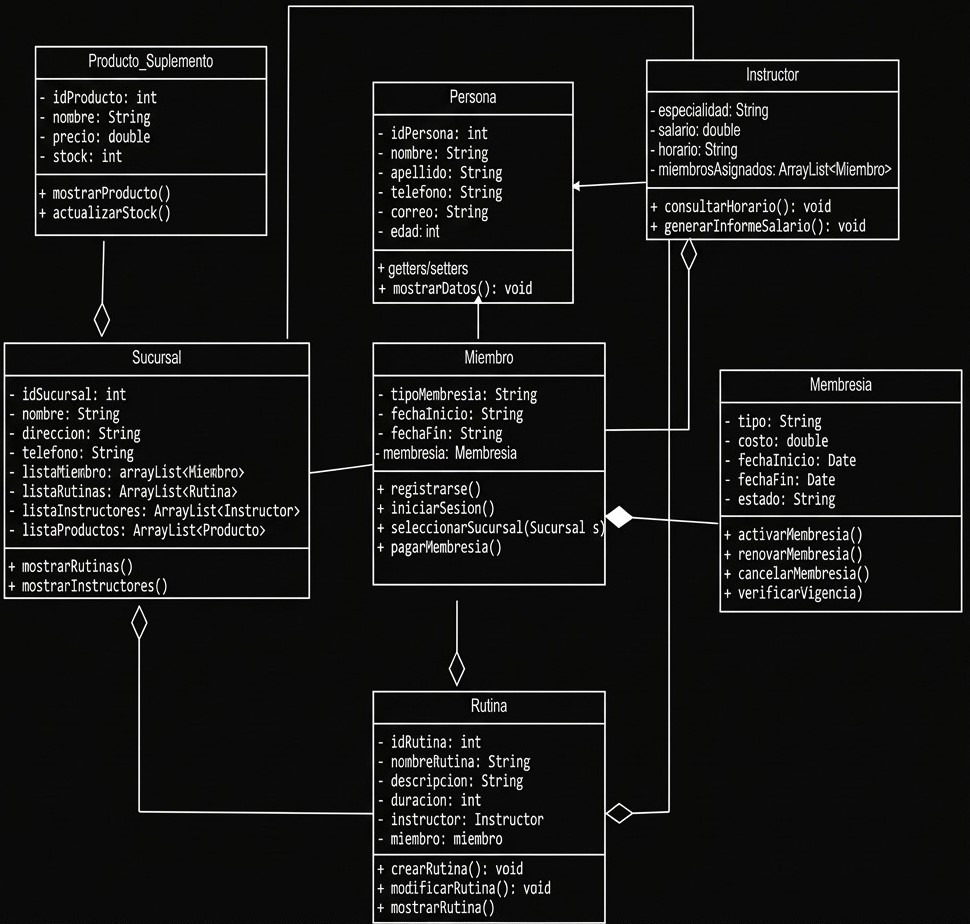
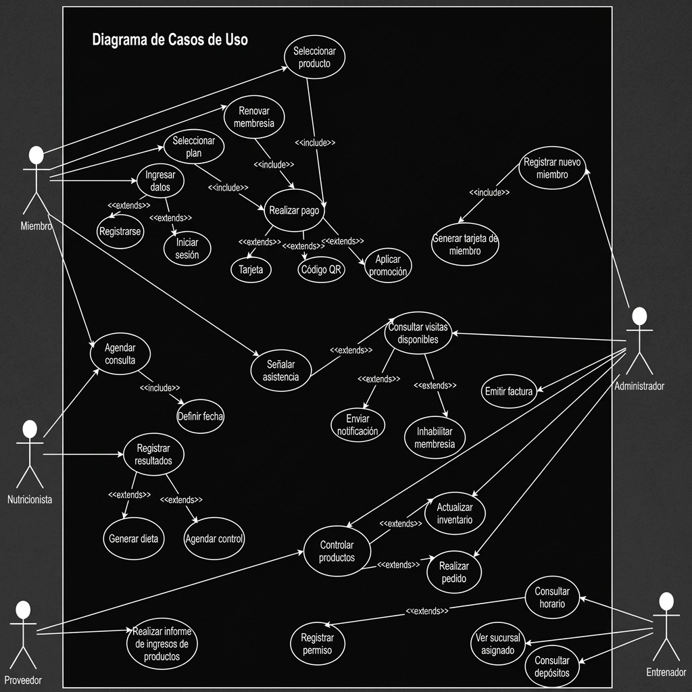

ORIENTADO A OBJETOS
DIAGRAMA ORIENTADO A OBJETOS

DIAGRAMA DE CASOS DE USO DEL SISTEMA
En este apartado decidimos implementar al proyecto lo último avanzado en la materia

ORIENTADO A OBJETOS

En este apartado decidimos implementar al proyecto lo último avanzado en la materia
